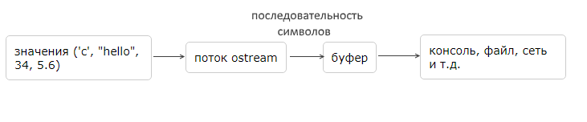
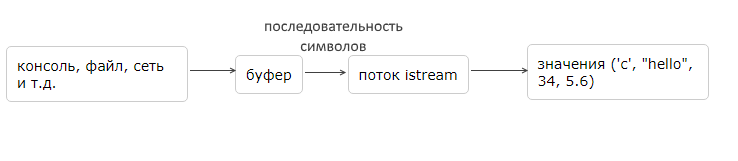

Базовые типы для работы с потоками
Все инструменты для работы с системой ввода-вывода и потоками в языке С++ определены в стандартной библиотеке. Заголовочный файл iostream определяет следующие базовые типы для работы с потоками:
- istream и wistream: читают данные с потока
- ostream и wostream: записывают данные в поток
- iostream и wiostream: читают и записывают данные в поток
Для каждого типа определен его двойник, который начинается на букву w и который предназначен для поддержки данных типа wchar_t.
Эти типы являются базовыми для других классов, управляющих потоками ввода-вывода.
Объект типа ostream получает значения различных типов, преобразует их в последовательность символов и передает их через буфер в определенное место для вывода (консоль, файл, сетевые интерфейсы и т.д.)
Поток istream получает через буфер из определенного места последовательности символов (с консоли, из файла, из сети и т.д.) и преобразует эти последовательности в значения различных типов. То есть когда мы вводим данные (с той же клавиатуры в консоли), сначала данные накапливаются в буфере и только затем передаются объекту istream.
По умолчанию в стандартной библиотеке определены объекты этих классов - cout, cin, cerr, которые работают с консолью.
Запись в поток
Для записи данных в поток ostream применяется оператор <<. Этот оператор получает два операнда. Левый операнд представляет объект типа ostream, а правый операнд - значение, которое надо вывести в поток.
К примеру, по умолчанию стандартная библиотека C++ предоставляет объект cout, который представляет тип ostream и позволяет выводить данные на консоль:
#include <iostream>
int main()
{
std::cout << "Hello" << std::endl;
return 0;
}
Так как оператор << возвращает левый операнд - cout, то с помощью цепочки операторов мы можем передать на консоль несколько значений:
std::cout << "Hello" << " world" << std::endl; Чтение данных
Для чтения данных из потока применяется оператор ввода >>, который принимает два операнда. Левый операнд представляет поток istream, с которого производится считывание, а правый операнд - объект, в который считываются данные.
Для чтения с консоли применяется объект cin, который представляет тип istream.
#include <iostream>
int main()
{
int age;
double weight;
std::cout << "Input age: ";
std::cin >> age;
std::cout << "Input weight: ";
std::cin >> weight;
std::cout << "Your age: " << age << "\t your weight: " << weight << std::endl;
return 0;
}
Однако такой способ не очень подходит для чтения строк с консоли особенно когда считываемая строка содержит пробельные символы. В этом случае лучше использовать встроенную функцию getline(), которая в качестве параметра принимает поток istream и переменную типа string, в которую надо считать данные:
#include <iostream>
#include <string>
int main()
{
std::string name;
std::cout << "Input name: ";
getline(std::cin, name);
//std::cin >> name;
std::cout << "Your name: " << name <<std::endl;
return 0;
}
Консольный вывод данной программы:
Input name: Tom Smit
Your name: Tom Smit
Вывод ошибок
Для вывода сообщения об ошибке на консоль применяется объект cerr, который представляет объект типа ostream:
#include <iostream>
int main()
{
std::cerr << "Error occured" << std::endl;
return 0;
}
Потоки символов wchar_t
Для работы с потоками данных типов wchar_t в стандартной библиотеке определены объекты wcout (тип wostream), wcerr (тип wostream) и wcin (тип wistream), которые являются аналогами для объектов cout, cerr и cin и работают аналогично
#include <iostream>
int main()
{
int age;
double weight;
std::wcout << "Input age: ";
std::wcin >> age;
std::wcout << "Input weight: ";
std::wcin >> weight;
if (age <= 0 || weight <= 0)
std::wcerr << "Invalid data" << std::endl;
else
std::wcout << "Your age: " << age << "\t your weight: " << weight << std::endl;
return 0;
}
 Лабораторная №1
Лабораторная №1